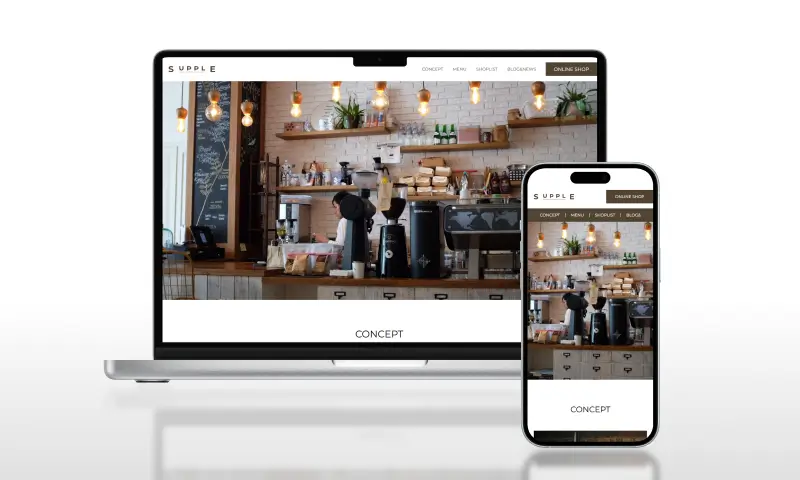
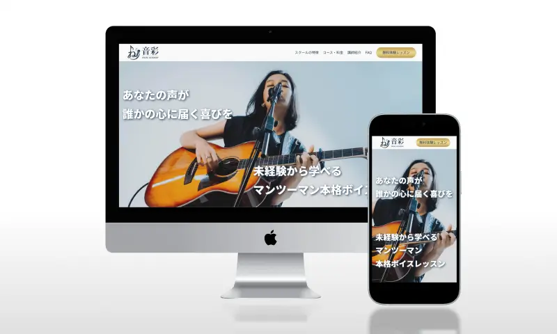
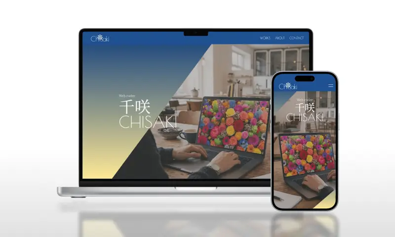

WORKS
すべてのサイトでGit/GitHubを用いたリポジトリ管理、
チーム開発を見据えたセルフPR等を行い制作を進めました。
-

架空カフェWebサイト
詳しく見る担当範囲：コーディング
使用技術：HTML/CSS(Sass)/JavaScript
-
架空カフェWebサイト（WordPress化）
詳しく見る担当範囲：WordPressオリジナルテーマ化
使用技術：HTML/CSS(Sass)/JavaScript/WordPress
-

架空ヴォーカル教室LP
詳しく見る担当範囲：デザイン/コーディング
使用技術：HTML/CSS(Sass)/JavaScript
-

千咲のポートフォリオサイト
詳しく見る担当範囲：デザイン/コーディング
使用技術：HTML/CSS(Sass)/JavaScript/Figma